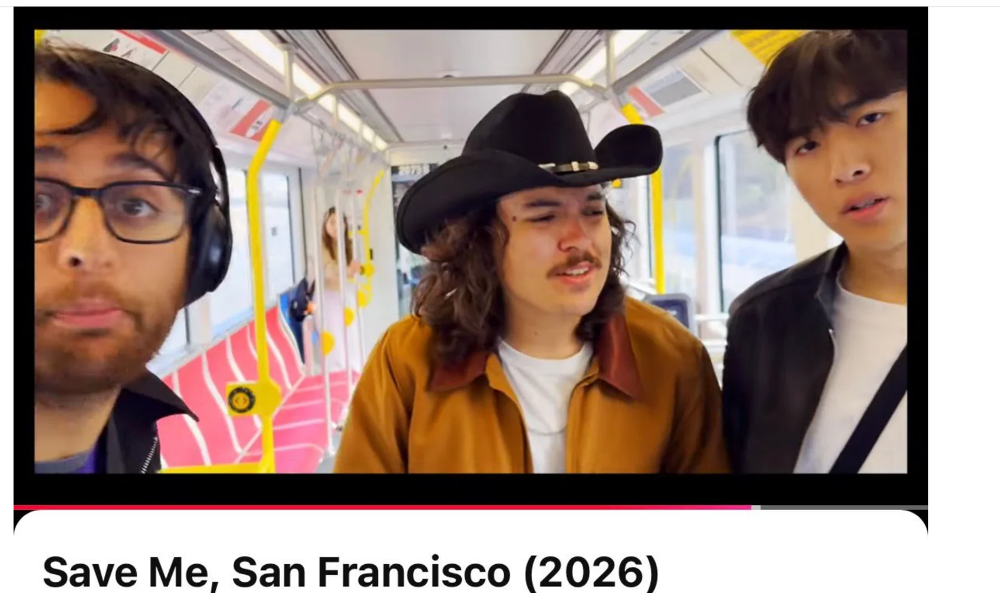
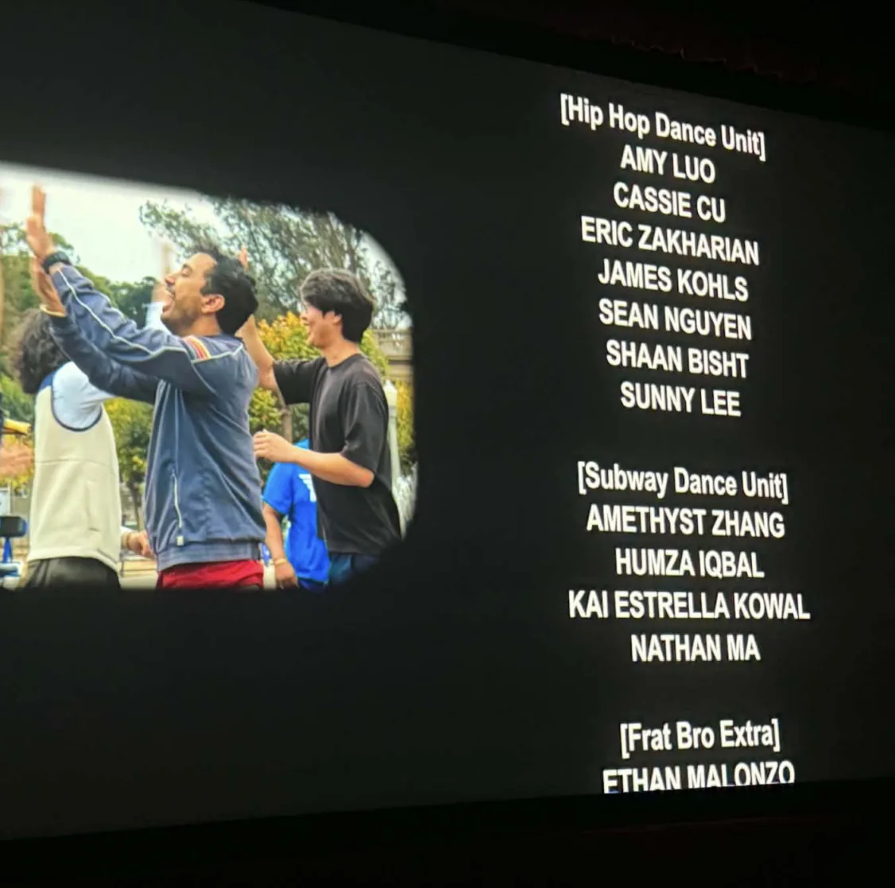
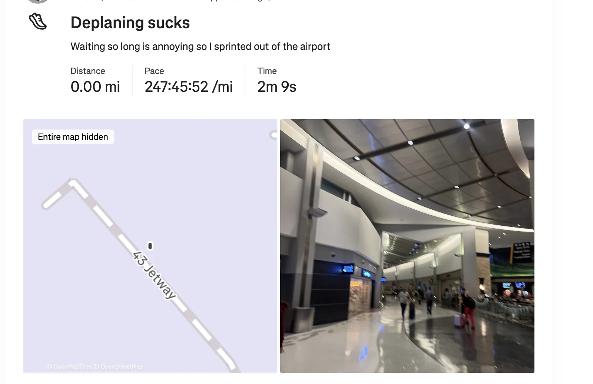
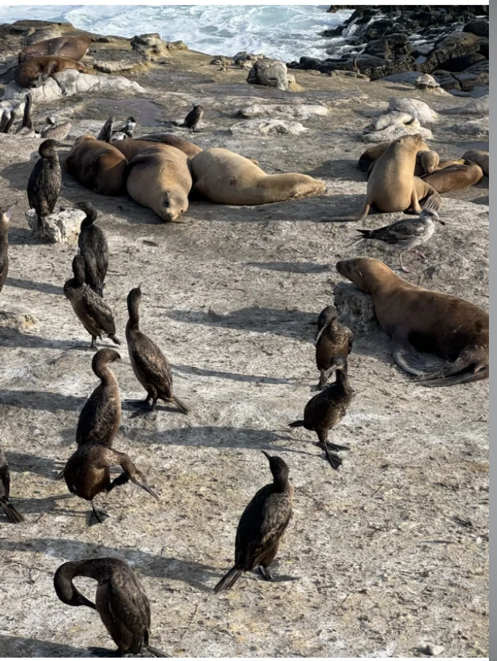
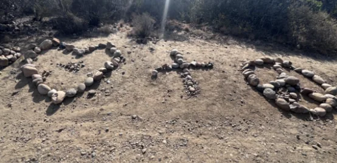
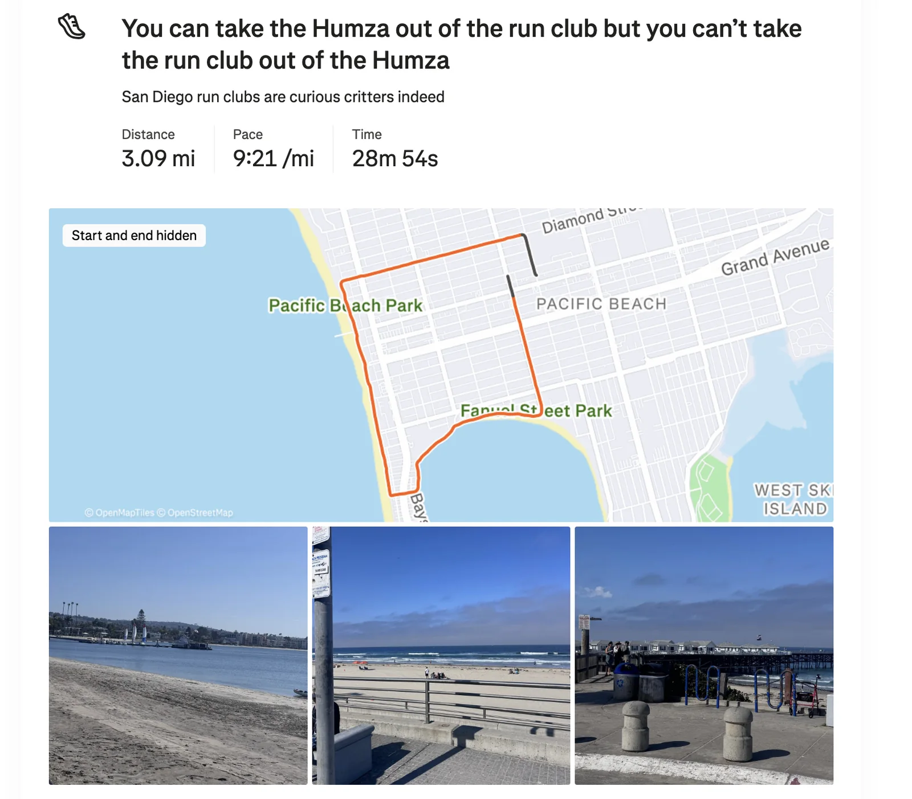

Monday
Today after another day shoveling the tokens into the model shabboth I went to go to the premiere of SF’s newest love letter Save me San Francisco! “The Film maker” has been working super hard on this film for a long time and it was super awesome to see it come to life. He rented out a full movie theater in the Marina just for this. A bunch of friends joined in for this including “The Quant,” “The Notetaker,” “Granola Girlie,” “The Raja of Rhythm,” “The Yogi” and a bunch more.
Without spoiling the movie I would describe it as an homage to both The Graduate and 500 days of Summer while also being a nod to our fabulous city of SF; and this was also a musical set to Chappel Roan songs as well. I was in the movie as a dance extra dancing on the MUNI dancing to a Chappel Roan song appropriately called “The Subway”
It was really fun seeing it all play out on the big screen with everyone around me laughing and applauding.


I know “The Filmmaker” has been hard at work on this film for many months and after seeing him go through the whole process of making the script, holding auditions, shooting, and the long tail of post processing, seeing all this come alive was incredibly satisfying. Huge congratulations!
Afterwards “The Filmmaker,” his sister, and his sister’s girlfriend did a rendition of “Carrying your love with me” by George Strait which was unexpected but super wholesome to see the “Filmaker” family go up together and perform in front of everyone;
The night ended with him showing off one of his earlier films called Fangs. This one is more meant to be a psychological thriller rather than a light hearted romcom; set in the unforgiving deserts of New Mexico as a lone hunter battles a ferocious bat. The atmosphere is darker, heavier, and more isolating as it mainly centers around a single character and their crusade against the bat compared to the musical with multiple characters who are (for the most part) a lot more upbeat.
Tuesday
Once I finished doing my part to increase my team’s Cursor usage I did standup classes today. My second go of it felt much better. My crowd work felt sharper, I felt more “in the zone” and I think I’m ready to try performing at the grad show. Of course I still have 2 more classes to get even better but I felt pumped! I wanted to take these classes to shake of my rust and get back into the zone and I think I’m starting to get there :D.
Wednesday
After spinning the wheel of capitalism forward one keyboard stroke at a time I went to Midnight Runners with “The Dentist,” “Sergeant Sassy” and some other folks that don’t have newsletter names.
The run itself was pretty straightforward. One thing I realized I struggle with though is talking with people mid run. I wanted to talk with “The Dentist” and a couple of her homies and found it hard to stay at the same pace even though I could definitely run at their pace. Its more that coordination is hard because my natural run pace is different from theirs. I want to get better at coordinating about that. “The Denist” has some pretty cool friends I want to get to know more. I just don’t know the secret to coordinating run paces naturally. I’m sure I’ll figure it out somehow.
In other news “Sergeant Sassy” has now officially joined “The Council” of giving me dating advice. She’s always been an unofficial member but I feel like announcing it on the newsletter is something Humza would do. She’ll be spinning up an exciting new initiative in home decor improvement where I give her a budget and she improves my apartment aesthetics. More details to come as the project gets underway but I’m excited to see where this goes.
Thursday
Once I finished my shift in the mines I headed out to go to San Diego for my younger sister’s graduation! She is graduating from UCSD with her M.P.H so me and my older sister are going down to see her. My parents would have come as well if they weren’t feeling under the weather.
As I leave to go to the airport I wonder why I hadn’t yet gotten an email asking me to check in for my flight. I checked my tickets only to realize I booked my flight for next week rather than this one. Thankfully I’m able to get tickets on a flight going at the exact same time today so nothing really changed but it was a close call.
The flight to San Diego is pretty fine although after being stuck in deplaning for 20 minutes my body craves activity so I decide to run through the airport to meetup with my sisters

I’m excited to try San Diego Mexican food since it’s supposedly much better than what we have in SF. My first experience was some pretty ok filet mignon tacos. Admittedly they aren’t from one of the street places that’s supposedly really good but I can’t say San Diego mexican food is really doing it for me right now.
Friday
I woke up and went for a walk around La Jolla to get a feel for the place and I have to say it’s quite nice. I saw some seals, some sealions, and some cool birds. Did y’all know that sea lions have visible ear flaps while seals only have ear holes


After wandering around the town I went to get matcha at the same place that it turns out my younger sister really likes to get matcha at as well. I guess there is something about Java Earth that runs in our family. Maybe it’s an Iqbal thing. I wonder if we got it from our Mom or our Dad?
Then me and my older sister rolled up to my younger sister’s graduation. Unfortunately at this point my older sister started feeling unwell so she hung back in the shade while I primarily handled photo and video duty since I was the only Iqbal who could record stuff.
The graduation proceeded exactly like one would expect. We start with speeches from the dean that nobody really cares much about if I’m being honest here. The dean talks about how much good you can do and how many opportunities there are with an MPH etc. The funniest part in my opinion was how she said that everyone was a stem cell because they could integrate into anything with their degree; the second funniest part being that they are now armed to infiltrate places and search for the truth. I had fun calling my younger sister and her other graduating friends stem cells. And wherever we ate I would ask what scientific truth we are searching for when we infiltrate this place.
Since this was at an outdoor amphitheater, I could shift around more easily than I could at a traditional seating hall. As the names were being called I was on standby until my younger sister was up. I then dashed as far to the front as I could to get the video of her and to shout congratulations. Some people made signs which I really wished I had thought of before this as I think it could have been a lot of fun. I had to make do with my naturally loud voice to project my admiration for her.
Seriously though, I am super proud of my younger sister as I know how hard she has been working throughout this degree and this is a big day for her. Many congrats sis!!
Once the ceremony was finished me and my sisters got some lunch at a nearby restaurant and hung around S.D for a while.
Thanks to an app called Walking Charlie that I downloaded on the recommendation of “The Fisherwoman”, I was inspired to walk more to hit 40k steps which I did while my sisters chilled in the apartment.
While walking I found a tent with this next to it which was an inspired sight.
Saturday
Today I decided to go to a run club in San Diego called Pacific Beach run club. With this run club we run for 3 miles but stop every 0.7 miles for everyone to catch up. I think this is definitely among the more casual run clubs I’ve been to as the front of the pack was running between a 9-9:30 pace. No matter which other run club I’ve done there are at least some people at the 8-8:30 with some going even beyond that at Marina or Midnight Runners so this felt a little bit odd. There were definitely times where I had to be careful not to go too fast without thinking, which is less of a brag when I remind myself that I’m sure other people were thinking the same thing.
The run itself was quite nice albeit very warm. While I’m glad I wore a plain white shirt I do wish it hadn’t been a thick uniqlo one.
This run club also has a unique tradition where before the run all new people have to get up, take a mic and introduce themselves and answer an icebreaker question. The question we were asked to answer today is who our celebrity crush is. I decided to go with Kim Seol Hyun since she is very attractive.

After the run club I met back up with my sisters. Unfortunately my older sister's condition has gotten worse so we took it easy today. We got some lunch and went to Del Mar for some views. I did sneak away a bit to get some walking in but it was generally pretty chill today.
I tried a burrito and taco from a San Diego classic “The Taco Stand” (no affiliation with “The Taco”) which did reinforce that my favorite lengua burrito is better than SD Mexican food.
Sunday
I get on an early morning flight from SD back to SF and head to trash pickup with “The Notetaker” and some other folks. One of the people there today volunteered to kayak at 4AM this morning for the Alcatraz triathlon to help catch swimmers that needed assistance which was pretty cool. She mentioned that some people are really bad at swimming and shouldn’t be doing a triathlon. If it wasn’t for the potential safety issue I would applaud someone going out of their comfort zone to do something they may not be qualified for but perhaps that isn’t the move.
Afterwards I went sting ray fishing with “The Juggler,” “The Fisherwoman,” “The Quant,” and “The Awepartment”. I tried casting today for the first time and was terrible at it. I think I’m fishing challenged or something because I could not get the line to actually go out. I thought I followed all the steps: opening the rod, putting it behind me, releasing but the only thing I released was anyone's hopes of my competency. Well ok I was able to successfully throw down a net in an attempt to get bait. To be clear I didn’t catch any bait but I executed the technique correctly. It was still fun though but I do wish I got more of a chance to try actually casting. Unfortunately we had limited time and there were sting rays to be caught so this wasn’t quite the moment for me to keep trying til I got it perfectly.
We did catch some halibut which was great. “The Awepartment” reeled in a halibut using “The Juggler’s” rod which was the first time “The Juggler’s” rod had caught a halibut!
After fishing I went to GGP for field day olympics with “Always up for a disc-ussion,” “The Big YT Short,” and “function(get_rid_of_cancer)”. Admittedly it was less an olympics and more a couple games of spikeball and some volleyball but it was a good time. I met someone who works in waste disposal and I asked him what the coolest part of his job was and he said the fact that he gets to work behind the scenes on some of the environmental regulations that impact these things. I never met anyone who works in that particular industry so I found it pretty neat.
We played volleyball which I was mostly terrible at except for serving where I did get on an 8 serve hot streak. I’m not very good at receiving the ball which isn’t great. I was able to successfully set the ball all of once out of the many times I tried. Some of my failures were failures to reach the ball, others were failures to hit the ball appropriately (it would just bounce off me and land on the ground). I thought all the time I spent watching Haikyu would help but sadly it did not :(.